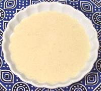

 |
Tahini DressingIran to Morocco | ||||
| Makes: Effort: Sched: DoAhead: |
3/4 cup * 15 min Yes |
An important dip/dressing used from Iran and the Levant across North Africa, through Morocco, and also in Greece, Turkey, and Armenia. It is used for green salads, vegetables, fish, and meat dishes. | |||
| If used as a dressing for fish you might up the lemon juice by 1 T. I usually skip the sugar as do many other recipes. Some season with a bit of black pepper. | |||||
|
|
1/3 1/3 1/4 2 3/4 1/4 |
c c c cl t t |
Tahini (1) Water Lemon Juice Garlic Salt Sugar (opt) |
Make: - (15 min)
|